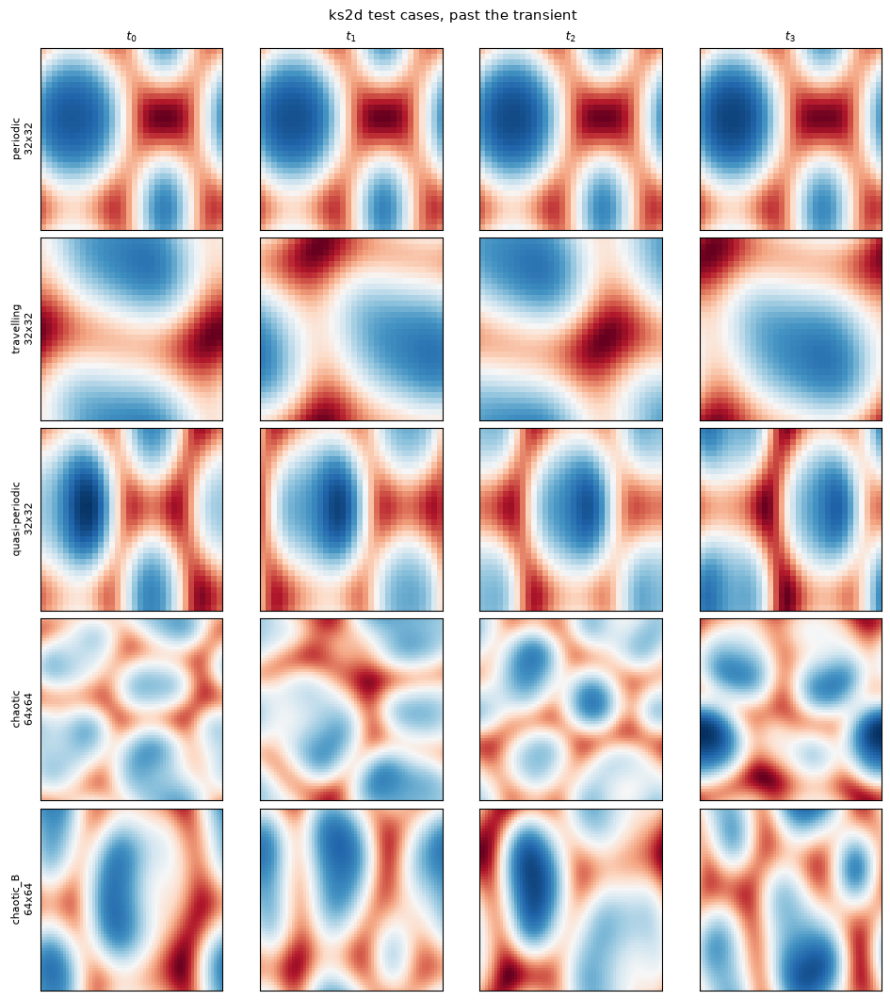

qlroms.intrusive_qlroms.ks2d — 2-D Kuramoto–Sivashinsky
The anisotropic 2-D KS equation on a periodic box, with the quadrature-weighted inner product (\(\mathbf{W} = \mathrm{diag}(w)\)) in the charts and the zero-spatial-mean projection carried by every member.

The five TEST_CASES (periodic, travelling, quasi-periodic on \(32\times32\); chaotic, chaotic_B on \(64\times64\)), four snapshots each past the transient (tutorial 0). The tutorials carry travelling (\(K=5\), \(r=25\)) and chaotic_B (\(K=40\), \(r=50\)) side by side.
At a glance
| Name | One-liner |
|---|---|
config.TEST_CASES, config.TIME_DEFAULTS |
The cases (periodic, travelling, quasi-periodic, chaotic, chaotic_B) and the shared windows. |
config.KS2DConfig |
Torch-side grids, wavenumbers, Lhat, quadrature weights wt; base of ROM, carried by FOM as .cfg. |
fom.FOM |
The full-order model: a dynamodels.physical.KS2D built from a case name. |
rom.ROM |
One chart with the diagonal weight Mw: quadratic Galerkin \((\bm{b},\mathbf{A},\mathsf{B})\), ETDRK4 step, zero-mean projection. |
rom.build_local_model(Xtrain, fom, r, K, save_dir) |
Weighted POD per cluster, Galerkin operators, atlas, compile; cached and truncatable in \(r\). |
rom.get_simulation_path(model, Ntrain) |
Cache directory keyed on \((\nu_1, \nu_2, N_x, N_y, \Delta t)\) and Ntrain. |
qlroms.intrusive_qlroms.ks2d.config
ks2d/config.py -- 2D Kuramoto-Sivashinsky case definitions.
TIME_DEFAULTS: generation windows (i0/Ntrain/Ntest) shared by every case;
TEST_CASES: one dict per case (nu1/nu2/Nx/Ny/dt/lamb1, the usual (K, r),
characterization timescales); KS2DConfig: torch-side grids, quadrature weights
and the linear symbol Lhat of a case, base of rom.ROM and carried by fom.FOM
as .cfg.
The full-order model lives in fom.py (FOM); the ROM stack in rom.py (ROM, qlROM, build_local_model, get_simulation_path).
KS2DConfig
dataclass
Shared configuration for 2D KS full-order and reduced-order models.
Source code in qlroms/intrusive_qlroms/ks2d/config.py
84 85 86 87 88 89 90 91 92 93 94 95 96 97 98 99 100 101 102 103 104 105 106 107 108 109 110 111 112 113 114 115 116 117 118 119 120 121 122 123 124 125 126 127 128 129 130 131 132 133 134 135 136 137 138 139 140 141 142 143 144 145 146 147 148 149 150 151 152 153 154 155 156 157 158 159 160 161 162 163 164 | |
N
property
Flattened state-vector length (Nx * Ny).
Lx
property
Domain length in x for compatibility with 1D plot utilities.
qlroms.intrusive_qlroms.ks2d.fom
Full-order model of a ks2d case: dynamodels.physical.KS2D built from a case name; carries its KS2DConfig as .cfg -- see build_ks.build_fom.
FOM
Bases: KS2D
Full-order model of a ks2d case: a dynamodels.physical.KS2D built from a case name.
KS2D already uses the case's parametrization directly -- KS2D(Nx=, Ny=, nu1=,
nu2=, dt=) with the PHYSICAL flattened state (Nx*Ny, m) -- so self.dt is the
case's physical step and no rescaling is involved. Its default initial condition
is the deterministic sin(X+Y) + sin(X) + sin(Y) field, so trajectories (and the
cache layout) are unchanged; KS2D was verified to 5e-14 against the old torch FOM
at the port.
The torch-side case config is carried whole as self.cfg (a KS2DConfig); pass
THAT to qlroms.utils.diagnosis, whose FOM argument reads N/dt -- dynamodels'
Model.N is the analysis-augmented size Nphi + Na + Nq, not Nx*Ny. Call sites
wanting the state size use fom.Nx * fom.Ny or fom.cfg.N.
Case-side quantities the torch ROM stack reads are real properties delegating to
self.cfg: wt (quadrature weights), Lx, lamb1, device, rdtype,
cdtype. Nx/Ny/nu1/nu2/dt are KS2D's own. Nothing shadows Model.
Source code in qlroms/intrusive_qlroms/ks2d/fom.py
11 12 13 14 15 16 17 18 19 20 21 22 23 24 25 26 27 28 29 30 31 32 33 34 35 36 37 38 39 40 41 42 43 44 45 46 47 48 49 50 51 52 53 54 55 56 57 58 59 60 61 62 63 64 65 66 67 68 69 70 71 72 73 74 75 76 77 78 79 80 81 82 83 84 | |
case
property
writable
Key into TEST_CASES this FOM was built from.
wt
property
Quadrature weights on the (Nx, Ny) grid, torch.
Lx
property
Domain length in x (2*l), for the shared 1D/2D plot utilities.
lamb1
property
Leading Lyapunov exponent of the case.
qlroms.intrusive_qlroms.ks2d.rom
Reduced-order models for the 2D KS system, on the unified qlroms stack.
ROM (a qlroms.charts.Chart with the diagonal quadrature-weight Mw) is the ONLY class this case defines: one cluster's weighted geometry plus its quadratic Galerkin operators, step_reduced, and the zero-spatial-mean projection. The quantized-local model is the generic compilation qlroms.base.qlROM (a qlGalerkin for Galerkin members), assembled by build_local_model. Stepping is model.step(apod); there is no case timestepping module.
ROM
dataclass
Bases: Chart, KS2DConfig, ABC
Single-cluster 2-D POD-ROM.
Phi and centroid are fixed at construction. All Galerkin operators (b, A, B) and ETDRK4 coefficients are computed once on first access via cached_property. Operator computation is deferred to avoid a circular import with build_ks.py.
This mirrors the 1-D ROM(KSConfig) base class so that qlROM
can delegate per-cluster work to independent ROM instances.
Source code in qlroms/intrusive_qlroms/ks2d/rom.py
30 31 32 33 34 35 36 37 38 39 40 41 42 43 44 45 46 47 48 49 50 51 52 53 54 55 56 57 58 59 60 61 62 63 64 65 66 67 68 69 70 71 72 73 74 75 76 77 78 79 80 81 82 83 84 85 86 87 88 89 90 91 92 93 94 95 96 97 98 99 100 101 102 103 104 105 106 107 108 109 110 111 112 113 114 | |
galerkin_rom
cached
property
(b, L, B) -- constant forcing (r,), linear operator (r,r), quadratic tensor (r,r,r).
etdrk4_rom
cached
property
(E, E2, Q, f1, f2, f3) matrix ETDRK4 coefficients for L_rom * dt.
step_reduced(a)
One ETDRK4 step of the pure (r, 1) reduced state with this cluster's quadratic Galerkin operators, then the zero-spatial-mean projection this chart carries (g_mean/mu_bar, mirroring the module stepper).
Source code in qlroms/intrusive_qlroms/ks2d/rom.py
104 105 106 107 108 109 110 111 112 113 114 | |
build_local_model(Xtrain, FOM, r=30, K=5, save_dir='.', clustering_kwargs=None, fit_operators=None, cache_tag='fit')
Train or load a local 2D qlROM and return it truncated to r modes.
Parameters:
| Name | Type | Description | Default |
|---|---|---|---|
Xtrain
|
ndarray | Tensor
|
Snapshot matrix with shape (Nx*Ny, Ntrain). |
required |
FOM
|
Full-order 2D KS model used to build local operators. |
required | |
r
|
int
|
Number of POD modes requested at return time. |
30
|
K
|
int
|
Number of local clusters. |
5
|
save_dir
|
str
|
Directory for model cache files. |
'.'
|
clustering_kwargs
|
dict | None
|
Forwarded to fit_clusters (random_state, kmeans_method, kmeans_n_init, kmeans_max_iter, assign_overlapping, overlap_tolerance). Defaults there: random_state=1, kmeans_method="full", kmeans_n_init=10, assign_overlapping=False, overlap_tolerance=1.1. |
None
|
fit_operators
|
None (default) builds (b, A, B) by intrusive Galerkin projection
of the FOM operator. A callable |
None
|
|
cache_tag
|
str
|
Cache-file suffix of a |
'fit'
|
Returns:
| Type | Description |
|---|---|
qlROM
|
qlROM model with basis truncated to r modes. |
Source code in qlroms/intrusive_qlroms/ks2d/rom.py
140 141 142 143 144 145 146 147 148 149 150 151 152 153 154 155 156 157 158 159 160 161 162 163 164 165 166 167 168 169 170 171 172 173 174 175 176 177 178 179 180 181 182 183 184 185 186 187 188 189 190 191 192 193 194 195 196 197 198 199 200 201 202 203 204 205 206 207 208 209 210 211 212 213 214 215 216 217 218 219 220 221 222 223 224 225 226 227 228 229 230 231 232 233 234 235 236 237 238 239 240 241 242 243 244 245 246 247 248 249 250 251 252 253 254 255 256 257 258 259 260 261 262 263 264 265 266 267 268 269 270 271 272 273 274 275 276 277 278 279 280 281 282 283 284 285 286 287 288 289 290 291 292 293 294 295 296 297 298 299 300 301 302 303 304 305 306 307 308 309 310 311 312 313 314 315 316 317 318 319 320 321 322 323 324 325 326 327 328 329 330 331 332 333 334 335 336 337 338 339 340 341 342 343 344 345 346 347 348 349 350 351 352 353 354 355 356 357 358 359 360 361 362 363 364 365 366 367 368 369 370 371 372 373 374 375 376 377 | |
get_simulation_path(model, Ntrain=None, Ntest=None, dt=None)
Return the folder used to store 2D KS local ROM caches.
model is either the ks2d FOM or a torch-side KS2DConfig/ROM; both carry the
case's physical (nu1, nu2, Nx, Ny, dt). Only Ntrain enters the path: a model is
defined by what it was fitted on, and the test window is chosen afterwards, out of
the same cached trajectory. Ntest is accepted and ignored (older call sites).
Source code in qlroms/intrusive_qlroms/ks2d/rom.py
381 382 383 384 385 386 387 388 389 390 391 392 393 394 395 396 397 398 | |